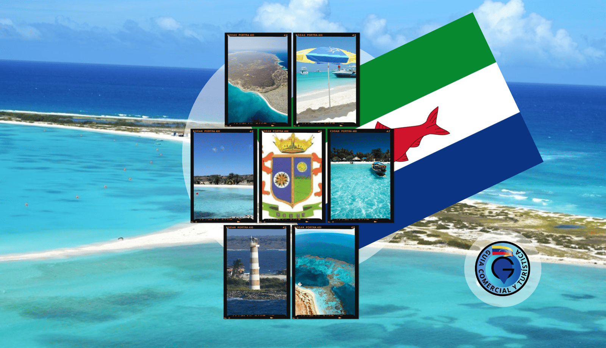
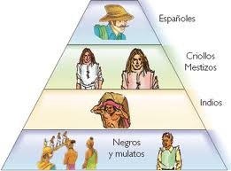

tecnología: En la época actual vs época colonial
La epoca actual
El estado de la tecnología en las Dependencias Federales de Venezuela (que abarcan las islas, islotes y territorios marítimos del país, como el Archipiélago de Los Roques, La Orchila o la Isla de Aves) presenta una realidad de contrastes. Combina un fuerte enfoque estratégico-militar y científico estatal con importantes limitaciones de conectividad y servicios básicos para la población civil.
- Infraestructura Satelital: La conexión en las dependencias más alejadas o estrictamente militares (como Isla de Aves o La Orchila) depende por completo de sistemas satelitales. Tras el cese de operaciones del satélite Simón Bolívar (Venesat-1), el Estado se apoya en el satélite de percepción remota Sucre (VRSS-2) para tareas de observación y cartografía, mientras que las telecomunicaciones dependen de acuerdos y servicios satelitales alternativos y de la estatal CANTV.
- Zonas Turísticas y Civiles: En zonas con población civil y actividad turística activa, como el Archipiélago de Los Roques (Gran Roque), se cuenta con radioenlaces y servicios de telefonía móvil (Movilnet, Movistar, Digitel) e internet, aunque históricamente con anchos de banda limitados y fluctuaciones debido a fallas en el suministro eléctrico local
Marco Legal e Institucional: Infogobierno y Soberanía
Las dependencias federales están sujetas a la legislación nacional en materia de tecnología impulsada por el Ejecutivo:
- Sistemas de Infogobierno y Trámites: Se rigen bajo la Ley de Infogobierno, que exige el uso prioritario de software libre y estándares abiertos en la administración pública. Esto busca centralizar los datos, facilitar trámites burocráticos y mitigar la dependencia de licencias de software privativo extranjero.
- Nuevas Leyes en Desarrollo: El Mincyt impulsa un paquete de seis leyes para la transformación digital, que incluye la Ley de Ciberseguridad (con enfoque en la protección de datos e infraestructuras críticas del Estado) y una ley para regular la Inteligencia Artificial, aplicable a todos los territorios federales.
Marco Legal e Institucional: Infogobierno y Soberanía
Las dependencias federales están sujetas a la legislación nacional en materia de tecnología impulsada por el Ejecutivo:
- Sistemas de Infogobierno y Trámites: Se rigen bajo la Ley de Infogobierno, que exige el uso prioritario de software libre y estándares abiertos en la administración pública. Esto busca centralizar los datos, facilitar trámites burocráticos y mitigar la dependencia de licencias de software privativo extranjero.
- Nuevas Leyes en Desarrollo: El Mincyt impulsa un paquete de seis leyes para la transformación digital, que incluye la Ley de Ciberseguridad (con enfoque en la protección de datos e infraestructuras críticas del Estado) y una ley para regular la Inteligencia Artificial, aplicable a todos los territorios federales.
Aplicaciones Estratégicas y Científicas
Debido a su ubicación fronteriza y biodiversidad, la tecnología implementada por el Estado en estas zonas se orienta a objetivos específicos:
- Monitoreo Ambiental y Gestión de Riesgos: A través de la Agencia Bolivariana para Actividades Espaciales (ABAE), se utilizan imágenes satelitales para la prevención de desastres naturales, gestión del riesgo marítimo y monitoreo del cambio climático en las costas e islas.
- Defensa y Seguridad: En las dependencias con bases de la Fuerza Armada Nacional Bolivariana (FANB), la prioridad tecnológica se centra en sistemas de radar, comunicaciones cifradas y equipos de vigilancia marítima para resguardar la soberanía territorial y combatir actividades ilícitas.
El principal obstáculo: Al igual que en el resto de las regiones insulares de la región, el despliegue tecnológico avanzado en las Dependencias Federales choca constantemente con la necesidad de consolidar sistemas de energía estables (como plantas termoeléctricas locales o proyectos de energía solar) que permitan mantener los equipos y las redes funcionando al 100% de su capacidad.

Epoca colonial
Si damos un salto en el tiempo hacia la época colonial (desde principios del siglo XVI hasta los movimientos de independencia a inicios del siglo XIX), el concepto de "tecnología" en lo que hoy conocemos como las Dependencias Federales de Venezuela y las instituciones coloniales era radicalmente distinto.
- Cartografía e Hidrografía: La corona española utilizaba instrumentos como el astrolabio, el cuadrante y, más tarde, el sextante para mapear las islas, arrecifes y corrientes del Caribe venezolano. El diseño de mapas precisos era la "tecnología de punta" de la época para evitar naufragios y asegurar las rutas comerciales hacia España.
- Astilleros y Reparación Naval: Aunque los barcos principales (galeones y fragatas) se construían en Europa o en astilleros mayores como La Habana o Cartagena, en las costas e islas venezolanas se aplicaban técnicas de calafateo (impermeabilización de cascos con brea o alquitrán natural) y carpintería de ribera para reparar embarcaciones.
Fortificaciones y Arquitectura Militar
Las islas venezolanas (como Margarita, Coche, Cubagua y los archipiélagos) sufrieron constantes ataques de piratas y corsarios ingleses, franceses y holandeses. La tecnología de defensa fue crucial:
- Ingeniería Militar: Se aplicaron los principios de las fortificaciones abaluartadas (muros gruesos de piedra y cal, diseñados en ángulos para resistir impactos de cañón y evitar puntos ciegos).
- Artillería: La tecnología bélica se basaba en cañones de hierro fundido o bronce y mosquetes. El posicionamiento estratégico de estas baterías en las islas permitía controlar el tráfico marítimo y proteger las rutas del comercio colonial.
Tecnología de Extracción y Explotación de Recursos
Las dependencias y costas venezolanas fueron famosas en los primeros siglos de la colonia por dos recursos principales:
- La Extracción de Perlas (Cubagua y Margarita): Al principio, se utilizó la fuerza bruta de los indígenas locales (luego reemplazados por esclavizados africanos) que se sumergían a pulmón. Técnicamente, las herramientas eran rudimentarias (redes, canoas, cuchillos), pero la logística de clasificación, pesaje y control fiscal de la Real Hacienda representaba un sistema administrativo muy estricto para la época.
- Las Salinas (Araya y Los Roques): La sal era un recurso tecnológico vital en la colonia, ya que era el único método masivo para conservar la carne y el pescado para los largos viajes trasatlánticos. En la península de Araya y en islas como Los Roques, se utilizaba la tecnología de evaporación solar en estanques artificiales para recolectar la sal, un recurso tan valioso que los holandeses intentaron invadir estas zonas repetidamente solo para extraerlo.
